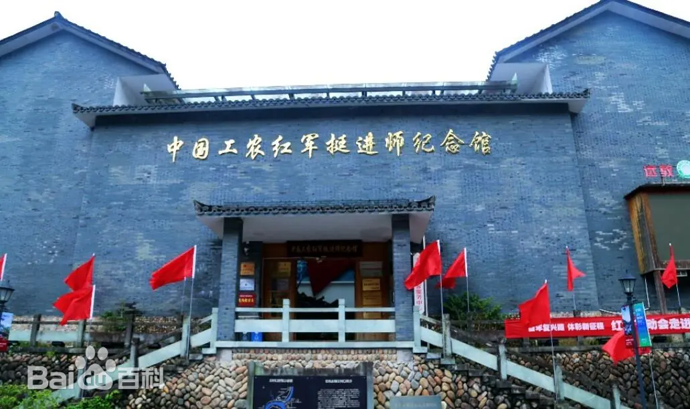
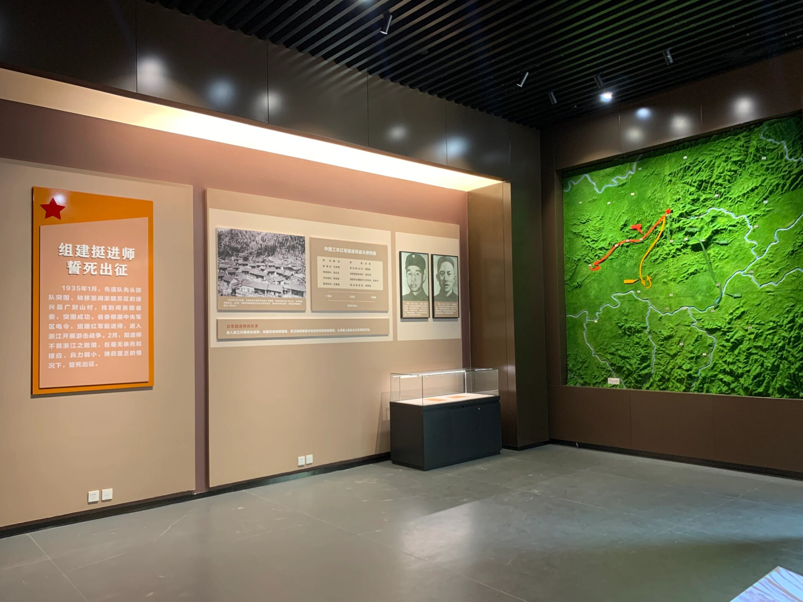

1935 年 9 月，浙西南山区的枫叶已染上霜红，而松阳县安岱后村的空气却凝重得让人窒息。国民党军调集 6 万余人，对刚建立不久的浙西南游击根据地发动大规模 “清剿”，飞机盘旋轰炸，敌军分片搜山，叫嚣着要 “把红军连根拔起”。此时，中国工农红军挺进师师长粟裕、政治委员刘英正率领主力部队在深山密林中与敌军周旋，而留在根据地坚持内线斗争的第三支队，面临着一场生死考验。
第三支队队长方志富是江西弋阳人，19 岁参加红军，跟随粟裕、刘英一路转战进入浙西南。“清剿” 开始后，支队与主力失去联系，被敌军围困在松阳与遂昌交界的牛头山深处，仅剩 37 人，且弹药匮乏、粮食断绝，多名战士还身负重伤。“我们是革命的种子，就算只剩一个人，也要把红旗扛下去！” 方志富在山洞里召开紧急会议，望着战士们疲惫却坚定的眼神，他咬着牙做出决定：分散隐蔽，依靠群众，开展麻雀战，与敌军周旋到底。
方志富带领的小组在深山里坚持斗争，他们没有粮食，就挖野菜、吃野果、啃树皮；没有弹药，就用石头、弓箭袭击小股敌军；没有药品，就用草药为战士疗伤。为了传递情报，他们发明了 “树叶密码”—— 用不同的树叶组合代表不同的消息：松针代表 “安全”，枫叶代表 “有敌情”，竹叶代表 “需要粮食”。村民们看到山林里的 “信号树”，就会想方设法把物资送到约定地点。


1935 年 11 月，方志富得知敌军要在安岱后村召开 “清剿胜利大会”，他决定发动突袭，打击敌军的嚣张气焰。他带领 8 名战士，提前埋伏在会场附近的山林里。大会当天，敌军聚集了 300 余人，县长在台上得意洋洋地吹嘘 “清剿成果”。就在此时，方志富一声令下，战士们居高临下，向会场投掷手榴弹、开枪射击。敌军毫无防备，顿时乱作一团，四处逃窜。突袭仅用了 15 分钟，战士们打死打伤敌军 20 余人，缴获步枪 12 支、子弹 300 余发，随后迅速撤离，消失在深山之中。这次突袭让敌军惊恐万分，也让根据地的群众重新看到了希望，越来越多的群众主动加入到支援红军的行列中。
然而，敌人的报复更加疯狂。他们认定是安岱后村群众给红军提供了帮助，于是对村庄进行了残酷的 “血洗”。村民陈老汉的儿子陈小明是红军交通员，因传递情报时被敌军逮捕，遭受了严刑拷打。敌军用烙铁烫他的身体，用竹签扎他的手指，逼他说出红军的藏身之处，但陈小明始终咬紧牙关，没有吐露一个字。“要杀要剐随便你们，红军是杀不完的！” 最终，17 岁的陈小明被敌军残忍杀害，牺牲前，他还朝着深山的方向高喊：“红军万岁！革命万岁！”
陈小明的牺牲没有吓倒群众，反而激发了大家的斗志。村民们自发组织起来，组成 “地下交通队”“担架队”“侦察队”，与红军并肩作战。妇女们为红军缝补衣物、制作布鞋；少年们组成 “放哨队”，在村口、山路旁放哨，用鸟鸣、口哨传递警报；老人们则利用走亲访友的机会，收集敌军情报。正是有了群众的支持，挺进师的战士们才能在绝境中坚持下来。
1936 年 2 月，春节临近，方志富带领战士们发动 “春节攻势”。他们趁着敌军过节松懈，连续袭击了松阳、遂昌境内的 10 余个敌军据点，缴获了大量物资，还解救了被关押的 20 余名党员和群众。攻势过后，分散的红军小组重新汇合，队伍扩大到 80 余人。此时，粟裕、刘英率领的主力部队也回师浙西南，与内线部队会师，浙西南游击根据地逐渐恢复。
1937 年抗日战争全面爆发后，挺进师与国民党浙西南当局达成抗日民族统一战线协议，改编为新四军第二支队第四团。方志富跟随部队开赴皖南抗日前线，临走前，他再次来到安岱后村，看望陈老汉。“陈大伯，我们要去打鬼子了，等抗战胜利，我们再来看您！” 陈老汉紧紧握着他的手，塞给他一双新做的布鞋：“孩子，一定要活着回来，我们等着你们凯旋！”
然而，方志富最终没能兑现承诺。1941 年皖南事变爆发，方志富在突围战斗中壮烈牺牲，年仅 26 岁。他牺牲后，战友们在他的口袋里发现了一张折叠整齐的纸片，上面是他用鲜血写下的誓言：“为革命牺牲，为人民献身，死而无憾！”
如今，在中 - 国工农红军挺进师纪念馆里，陈列着方志富使用过的步枪、陈老汉送粮用的竹篓、陈小明牺牲时穿的血衣，这些文物无声地诉说着那段惊心动魄的革命岁月。安岱后村的游击古道上，当年红军战士踩出的脚印依然清晰可见；牛头山的山洞里，还留存着战士们生活过的痕迹。这些红色印记，不仅见证了挺进师 “孤军深入、绝地求生” 的革命壮举，更印证了 “人民群众是历史的创造者” 这一深刻的马克思主义真理 —— 正是因为有了浙西南人民的生死相依、鼎力支持，挺进师才能在敌我力量极为悬殊的情况下坚持斗争，让革命的火种在深山里永不熄灭。
返回